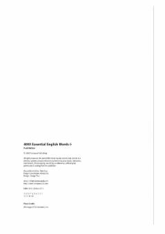

4EIngliz tilida 4000 ta muhim so'zni o'rgatuvchi seriyaning oltinchi kitobi.
Bu kitob ingliz tilini o'rganuvchilar uchun mo'ljallangan bo'lib, 4000 ta muhim ingliz so'zining oltinchi qismidir. Har bir bo'limda yangi so'zlar, ularning ma'nolari va qo'llanilishi qisqa matnlar orqali o'rgatiladi. Paul Nation tomonidan yozilgan ushbu seriya til o'rganuvchilarning so'z boyligini kengaytirishga yordam beradi.